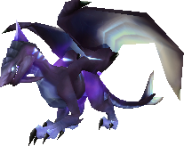

Our Lore, Our Characters & Our Community
This statement explains how we, as fans and roleplayers in the Warcraft universe, approach the Lore and Worldbuilding established by its creators alongside our own original characters, interpretations, and stories.
Yes, it is strange that we must define this. When people create characters or stories within a fictional setting, it should hardly be surprising that they may choose to follow that setting's lore. Unfortunately, a serious incident involving some individuals assumptions about our characters ages, artwork, and behavior made it necessary for us to explain our approach more explicitly.
To be clear: We do not wish to dwell on that experience, but neither do we wish to see it repeated. We believe transparency matters, particularly when explaining why some of our character biographies may contain additional notes about age and development.
Our broader cultural and historical interpretations are explored in The Lore We Follow. Here, we focus on the specific issues that made this statement necessary.
You can use the links below to skip ahead, but we would appreciate if you would take a moment to read the page in whole to understand where we stand.
The Lore We Follow & Why
A fantasy species is more than a human with a different appearance.
Fantasy worlds contain intelligent peoples whose biology, lifespans, traditions, beliefs, and ideas of family or community may differ profoundly from our own views and beliefs in real life. Those differences are often intentional parts of the worlds created by their writers and developers.
A dragon that lives for centuries or millennia may see time and responsibility differently from a human. A being whose lifespan is drastically shortened may be driven by the fear of running out of time.
As players in this fictional world, we understand and accept that this is not real-life. We choose to respect these differences because they give our characters their histories, ambitions, relationships, and conflicts. Changing a species' nature can fundamentally alter the story being told.
We also recognize that established lore is not always complete or consistent. Where it leaves room for interpretation, we add our own worldbuilding without claiming those additions are official Blizzard canon. Other roleplayers are welcome to approach the same material differently.
Understanding Characters Beyond a First Impression
Our characters' biographies are intended to be read as a whole. Chronological age, physical appearance, developmental maturity, and personality are not interchangeable. The incident described further below arose largely from treating one or all of these isolated detail's as if it overruled everything else.
- Artwork and appearance. A viewer may feel that a character looks younger or older than intended, or think one of short stature is tied to youth, but an impression based on an illustration or chosen/developing art style or listed appearance/height is not a verified fact about the character's age. Artistic style, height, and facial features should be considered alongside the written biography.
- Numerical ages without species context. Fantasy peoples need not develop on a real-life human timetable. Some mature rapidly where even a 3 year old could be a fully mature adult for their species; others may take centuries where a race may still view someone 200 in age as a young child. A chronological number alone does not establish their developmental stage.
- Personality and behavior. Adults can be shy, withdrawn, unsure of themselves, emotionally vulnerable, or inexperienced in particular situations. Those qualities do not automatically make them children.
Different species, different paths to adulthood
These examples show why each species must be understood in its own context. These differences create relationships, conflicts, and choices that would disappear if every race were reduced to the same set of modern real-life human expectations. We want the peoples of our world to feel different because those differences help make the world feel alive. Our wanting to respect a species lore, from their cultures, traditions, struggles, and yes rate of aging can help shape who they become, their dreams and goals.
For example, Warcraft's Orcs are described as growing to nearly adult-human size by approximately age 6, while their coming-of-age (becoming adults) customs occur later at around age 12. Draka's history shown in In Rise of the Horde, reaches that coming-of-age milestone just before she became a mate to Durotan and a parent to Thrall, provides another example of how age and cultural milestones are described within the setting.
Even in standard D&D, the games popular Dragonborn race (Under Traits > Age) "walk hours after hatching, attain the size and development of a 10-year-old human child by the age of 3, and reach adulthood by age 15.". Thus a character who is chronologically 16 years old within these fantasy constraints by that races lore is biologically, mechanically, and narratively a fully matured adult regardless of their numeral age.
Where useful, our biographies explain a character's chronological age, established developmental stage, and an approximate human-equivalent comparison. Such comparisons are aids to understanding our portrayals, not official age-conversion formulas supplied by Blizzard.
Different readers may interpret artwork or lore differently. What is not acceptable is presenting a personal interpretation as proof of wrongdoing by the person who created a character.
Example: Jornaku — The Cost of a Shortened Life

One particularly meaningful example is Jornaku (Jornus in his mortal guise), a Nether Dragon.
He is included here because his numerical age was taken out of context during the incident, and because the biology of his species is essential to his story. This shows why we don't just list and age all our characters as if they were real life people.
A brief history: Nether Dragons descend from Black Dragon eggs transformed by the energies of the Twisting Nether after the planet Draenor's destruction into Outland (8 ADP). Nether Dragon's established lore describes rapid development and unstable energies that can burn out, giving them much shorter lives than other dragons.
During Battle for Azeroth (33 ADP), Jornaku is 13 years old chronologically, but has long since reached the adult developmental stage of his species.
His biography gives an approximate human-equivalent developmental comparison of a man in his 40's in age. This is our group's interpretation of Jornaku, not a universal formula for nether dragons.
More importantly, his shortened lifespan is central to his character, not a convenient excuse for a number in his biography.
After surviving captivity by the Dragonmaw Clan, abuse, and suffering, Jornaku was rescued by a mortal who offered him the possibility of a different life. But the instability of his own body means he may die long before the person who saved him. By age 19, during the Dragonflight era (40 ADP), Jornaku has begun to feel what he believes are the first signs of that burnout. The prospect TERRIFIES him.
As his condition begins to deteriorate during Dragonflight, Jornaku's determination becomes even more urgent. Having found love with a blue dragon just before the events of Shadowlands, he now faces the possibility of leaving behind not only the mortal who gave him freedom, but a mate with whom he had hoped to share a future with, something he never thought he would have.
That fear drives one of his deepest goals: finding a way to stabilize his body and extend his life. He is willing to undergo experimentation, including painful or dangerous procedures, in the hope of gaining more time with those profoundly important to him.
Remove a Nether Dragon's rapid aging and shortened lifespan, and you remove the central conflict behind one of Jornaku's most meaningful ambitions. His decisions, sacrifices, and fears would no longer carry the same meaning if he 'aged normally'.
This is precisely why we refuse to treat every fantasy species as an ordinary human with a different appearance. Their biology matters. Their cultures matter. Their differences matter. Those differences and histories give shape to the stories we tell.
Why This Notice Became Necessary — The Incident
We did not create this statement merely because another group disagreed with our interpretations of fantasy lore. We created it following an extended incident of harassment directed at one of our members over characters they had consistently written and portrayed as adults.
How it began
One of our members had been participating in shared roleplay sessions and exchanging character information (bio's in text files sent over, as we had no set location at the time to display them) with people outside our group for several months. It all seemed fine, new stories were being made, new character interactions were had. The rest of us were planing to join in to expand our world and theirs...
However... After the relationship status of one of our players characters came to light, everything in the neighborhood hit the fan.
The 'incident' started as these individuals began insisting; not lightly; but hard double-down -INSISTING- that our players characters who were consistently described in the roleplays and documented via shared biographies as adults, were actually “young children” the whole time in their view. The one character that started this, who's listed age in their biography is 28 years old, was described by them as “looking young/under the age of 16.” based on drawn images, and using an in character statement on how long they have been traveling for as a defined value of age. Thus it was 'not right' and 'disgusting' for them to be portrayed in any kind of adult relationship. Yes, as absurd as that sounds, that is what started the whole mess.
Another individual from these roleplay sessions described the characters as “babies that needed to stay innocent”, directly referencing both Jornaku who got pulled into this mess and used to 'validate their views' due to his numeral age listing of 13, while flat out ignoring his species lore of rapid aging and development, shortened lifespan, and that his bio also listed his human-equivalent age as being a man in his 40's. Plus another character with an established age of 22, who was interpreted by these individuals as approximately being 8-10 years old, based on artwork and their withdrawn behavior in a story that showcased an less then ideal event 7 years in their past.
To sum it up...
The arguments these individual's repeatedly insisted on relied heavily on three things:
Artwork they felt made the characters somehow look like 'young children' in their minds.
Numerical ages stripped of their species-specific context, including Jornaku's; and...
Behavior such as shyness, timidity, withdrawal, or uncertainty that they interpreted as 'acting like a child'.
All of that tied into them viewing and insisting these characters had to be young children all along regardless of how they were described and role-played as that needed protecting 'from us, the characters creators' who they apparently thought we were lying about our characters being adults in order to hide us dabbling in inappropriate conducts. Along with wanting to use us following the world lore, plus our own stories to further validate and prove their point.
What we did to clarify the characters
The characters' creator and members of our group repeatedly explained their biographies, timelines, species-specific development, and intended adult portrayals. We even retrieved illustrated character biographies dating back to 2013 to show that those portrayals as adults had long predated the dispute.
We even pointing out the very visible AGE listing in the biographies they already had in their possession via the very text files we had shared, that they downloaded so nothing could be edited after the fact, that they conveniently skimmed over or chose to ignore...
However... Rather than engaging with that information, accepting what we as the creators of these characters were saying and showing, and admit they made the mistake assuming these characters were children... these individuals instead double-downed, out right dismissed and distorted these explanations, disregarding them outright and twisted it around into it all being an attempt of our players to “justify their sick fetish” for “underage content”.
The irony of that accusation was not lost on us. We were providing years of existing material to explain that the characters were written and portrayed as adults, while those making the accusations insisted that characters they neither created nor owned must be children.... all because they... said so...
It still baffles us how our word about our own characters was dismissed in favor of those interpretations and assumptions that were repeatedly treated as established facts and used to 'justify their own views'.
How the situation escalated
While all of the above was going on, allegations about our member's intentions in their eyes were being circulated across multiple platforms by these individuals and were accompanied by further harassment and threats by people not involved who only had the word of these individuals to go by. People who were once thought of as friends turned their back's on our player; and us; as they chose to blindly believe what 'others' were saying, rather than come to us to hear our side, or make any attempt to validate what was being spread around.
We all saw first hand the depth these individuals were going in their campaign by accessing the affected member's accounts with their permission, as well as having already previously been members of some of the chat and game groups these individual's were spreading their 'warnings' in. We also assisted with reports to the relevant platforms these threats and harassment messages were received on.
We strongly believe if ANY ONE of these people took the time to come to us, and asked of our side, asked us how old these characters were and LISTENED instead of blindly following what these individual's were spreading around or tossing out what we said, this mess wouldn't have gotten as bad as it had. But NO ONE bothered. That's the sad part.
The incident had a lasting effect on those involved. What began with assumptions about fictional characters escalated into accusations against a real person, intimidation, threats, and sustained harassment. We will not accept a repeat of that conduct toward any member of our group.
Our lore can be questioned or discussed in good faith. Our members' safety and dignity are not negotiable.
Our Community Standards
A Moment in Time welcomes readers who enjoy our stories, appreciate the worlds that inspire them, or simply want to learn about our characters. You are welcome to prefer other interpretations, disagree with our creative decisions, or choose not to engage with our work.
Disagreement is not permission to harass someone. We expect visitors and participants to respect these boundaries:
- Ask, don't assume. Read available biographies and ask genuine questions before drawing conclusions.
- Respect creative ownership. Your interpretation is not a license to misrepresent someone else's character or intentions.
- Distinguish fiction from reality. Portraying a fictional species or culture is not automatically an endorsement of its customs in real life.
- Disagree without harassment. Criticism is welcome; personal attacks, intimidation, threats, and targeted abuse are not.
- Do not circulate unverified accusations. Unsupported claims about a real creator's motives can cause real harm.
We reserve the right to refuse engagement, moderate spaces under our control, restrict contact with people engaging in abuse, and report threats or harassment to the relevant platforms or authorities when warranted.
These boundaries are not open to negotiation through harassment or intimidation.
A Final Word from Our Group
For more than two decades, A Moment in Time has brought friends and family together through imagination and shared adventures. The distinct peoples of these fantasy settings, and the lives we create for them, are part of what makes those adventures meaningful.
We do not ask everyone to adopt our interpretations. We ask that others respect our right to create without intimidation, and understand that a fictional world need not mirror ordinary human life to tell a compelling story.
Our worlds may be fictional, but the people creating them are real, and they deserve to be treated with dignity and respect.